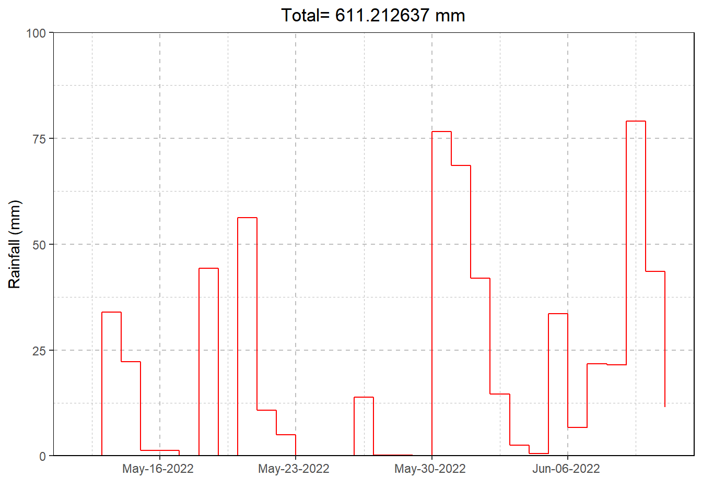

Rainfall Report for HY Aorere at Salisbury Br

Catchment: Aorere
Altitude: 70m
Period of analysis: 31 October 1990 to 31 December
2019.
Exposure: A narrow valley in the low level foothills,
surrounded by regenerating bush.
HY Aorere at Salisbury Br Statistcs
| Period | 1 hr | 6 hour | 24 hr |
|---|---|---|---|
| 2 year | 28.7 | 85.5 | 164 |
| 5 year | 37.2 | 110.0 | 210 |
| 10 year | 43.6 | 128.0 | 244 |
| 20 year | 50.3 | 147.0 | 279 |
| 50 year | 59.5 | 173.0 | 327 |
| 100 year | 66.7 | 194.0 | 363 |
Storm totals are from HIRDS analysis based on site location.
** Drought totals and extremes are from analysis based on data collected
on site.
Tasman District Council has exercised all reasonable skill and care in collecting and displaying this information. However, the data is provisional, and may be incorrect until checked by staff. Data should be used with caution where there are safety, monetary, or operational consequences if the data is incorrect. Note also, the data may be changed at a later time.